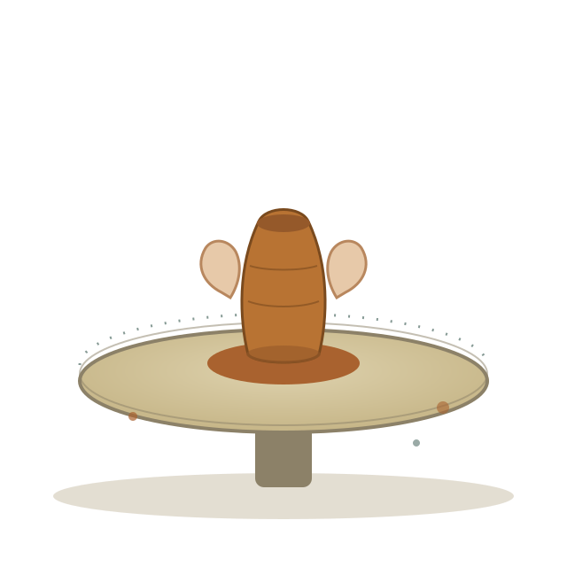
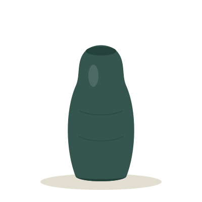
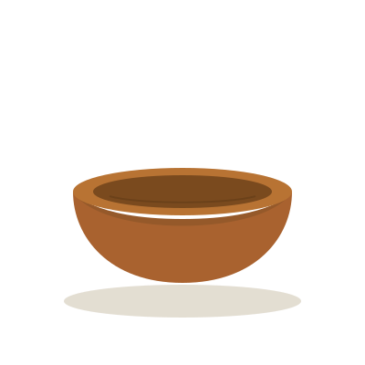
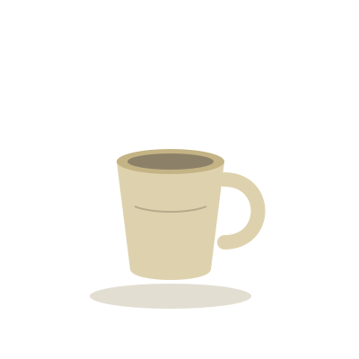
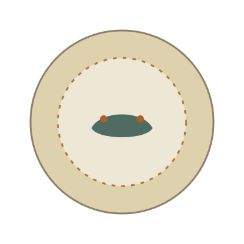

Lutul prinde formă sub degete, nu în calapoade.
Suntem un atelier mic de ceramică în centrul Chișinăului, unde argila e lucrată exclusiv manual — la roată sau prin modelaj liber. Nu producem în serie: fiecare bol, cană sau vas iese din atelier cu urmele degetelor celui care l-a făcut.
Ținem cursuri pentru începători, ateliere de o seară și grupuri restrânse de câte 6 persoane, ca fiecare să aibă timp real la roată, nu doar la privit.

Despre atelier
Atelier Lut a pornit din nevoia de a lucra cu mâinile, într-o perioadă în care majoritatea lucrurilor din jurul nostru sunt fabricate departe și rapid. Folosim argilă adusă din câteva cariere din apropierea Chișinăului, pe care o testăm și o frământăm chiar în atelier, înainte să ajungă pe roată.
Nu suntem un magazin de suveniruri și nici o fabrică — suntem un spațiu de câțiva metri pătrați, cu praf de lut pe podea și cuptor propriu, unde poți învăța, greși, reface și, la final, lua acasă un obiect pe care l-ai făcut chiar tu.
„Nu predăm perfecțiune. Predăm răbdare — și cum să simți când lutul e gata să devină ceva."
Fondatoarea atelierului, Ana Rusu, lucrează ceramică de peste zece ani și a învățat meșteșugul de la un olar din Iași înainte să deschidă acest spațiu. Astăzi, alături de ea predau alți doi ceramiști din echipă.
Ateliere pentru toate nivelurile
Fie că nu ai atins niciodată lutul, fie că vrei să exersezi constant, avem un format potrivit.
-
Începători
Inițiere la roata olarului
Un atelier de 2 ore în care înveți poziția corectă, centrarea lutului și modelarea unei prime forme simple — cană sau bol mic. Nu ai nevoie de experiență anterioară.
-
Toate vârstele
Modelaj liber, fără roată
Lucrezi lutul direct cu mâinile: plăci, sulișoare, tehnica "pinch". Potrivit și pentru copii de la 8 ani, alături de un adult.
-
Curs
Curs intensiv, 8 săptămâni
O ședință pe săptămână, grup fix de 6 persoane. Parcurgi tot procesul: modelare, uscare, prima ardere, glazurare, a doua ardere. Pleci acasă cu 4-5 piese finite.
-
Grupuri
Ateliere private și team-building
Rezervi tot atelierul pentru grupul tău — petreceri, evenimente de birou sau întâlniri de familie. Materialele și arderea sunt incluse în preț.
Din atelier
Câteva piese lucrate de cursanți în ultimele grupe.




Program și prețuri
Locurile se ocupă rapid — recomandăm rezervarea cu cel puțin 3 zile înainte.
| Ziua | Ora | Atelierul | Preț |
|---|---|---|---|
| Luni — Vineri | 18:00 – 20:00 | Inițiere la roata olarului | 450 MDL |
| Sâmbătă | 10:00 – 12:00 | Modelaj liber (copii + adulți) | 350 MDL |
| Sâmbătă | 13:00 – 15:00 | Curs intensiv, sesiune săptămânală | 2 400 MDL / 8 săpt. |
| Duminică | 11:00 – 13:00 | Modelaj liber, nivel avansat | 400 MDL |
| La cerere | Flexibil, min. 2 ore | Atelier privat / team-building | de la 3 500 MDL / grup |
Hai să ne cunoaștem
Trece pe la atelier să vezi spațiul și piesele din vitrină, sau scrie-ne direct ca să-ți rezervăm un loc la grupa potrivită.
- Adresă Str. Ismail 42, Chișinău
- Telefon +373 60 123 456
- E-mail salut@atelierlut.md
- Rețele sociale Instagram · Facebook